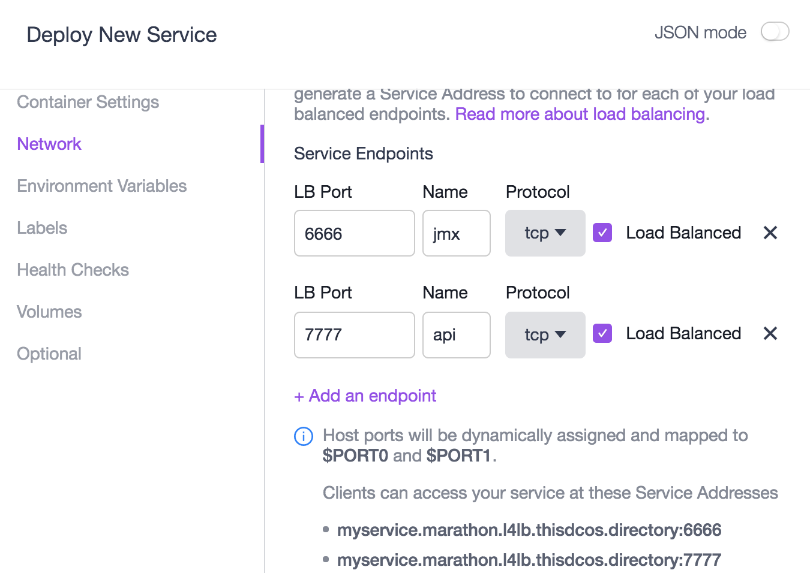
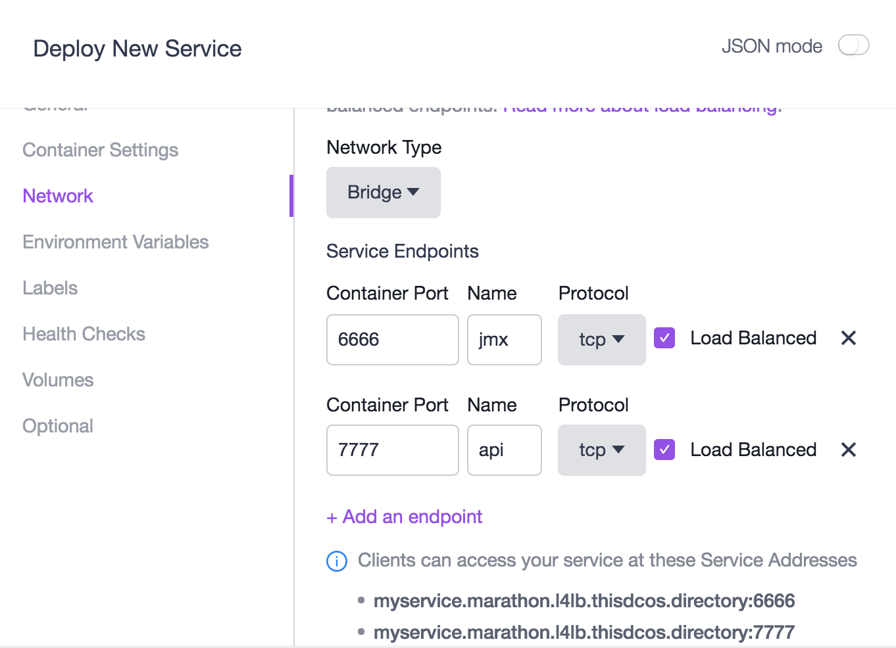

VIPs
DCOS提供了一个名为Minuteman的服务器端内部微服务之间的东-西向（区分于Client-Server的南-北向）4层负载均衡。为了易于服务的配置和发现，DCOS采用命名（name-based）VIPs来定位服务。因此，客户端访问服务时连接的是一个服务地址而不是具体的IP地址，同时DCOS可以很容易的将指向一个命名VIP的调用请求映射到多个具体的IP地址和端口，从而实现负载调度。采用命名VIPs的另一个好处是可以避免与基于IP的VIP产生冲突，在服务安装时可以自动创建。
一个命名VIP包含3个组成部分：
私有的虚拟IP地址
端口（通过该端口提供服务）
服务名称
VIPs的命名遵循如下规则：
<service-name>.marathon.l4lb.thisdcos.directory:<port>
根据Marathon所运行的是Docker容器镜像还是AppC容器镜像的不同，在Marathon应用定义中分别用portMappings和portDefinitions两个不同的属性节点进行配置。
AppC容器配置
{
"id": "myservice",
"portDefinitions": [
{
"protocol": "tcp",
"port": 6666,
"labels": { "VIP_0": "myservice:6666" },
"name": "jmx"
},
{
"protocol": "tcp",
"port": 7777,
"labels": { "VIP_1": "myservice:7777" },
"name": "api"
}
]
}如上示例，该配置定义了两个VIP：
myservice.marathon.l4lb.thisdcos.directory:6666myservice.marathon.l4lb.thisdcos.directory:7777
客户端（注：此处指DCOS集群中的其他服务）可以通过调用端口为6666的VIP访问服务提供的JMX管理功能，可以通过调用端口为7777的VIP访问服务提供的业务API。
在DC/OS集群节点内，可以通过以下命令检查服务是否可用:
curl myservice.marathon.l4lb.thisdcos.directory:6666 -vv注意，
VIPs不支持ping命令。VIPs在DC/OS中并不是标准意义上的IP地址，仅仅是IP:端口的组合，如果向
myservice.marathon.l4lb.thisdcos.directory发送ping指令，实际上是向myservice.marathon.l4lb.thisdcos.directory发送了ICMP请求，而LB被配置为截获和负载指向myservice.marathon.l4lb.thisdcos.directory:6666组合的地址的流量。VIP_N标签的值，除了是一个名称:端口之外，也可以定义为一个IP:端口，例如：
"labels": { "VIP_0": "10.21.1.15:6666" }。此时，可以通过10.21.1.15:6666来访问该服务。
上述配置也可以通过DCOS的WEB管理控制台进行配置：

Docker容器配置
{
"id": "myservice",
"container": {
"docker": {
"image": "chrisrc/myservice",
"portMappings": [
{
"containerPort": 6666,
"protocol": "tcp",
"name": "jmx",
"servicePort": 6666,
"labels": { "VIP_0": "myservice:6666" }
},
{
"containerPort": 7777,
"protocol": "tcp",
"name": "api",
"servicePort": 7777,
"labels": { "VIP_1": "myservice:7777" }
}
],
"network": "BRIDGE"
}
}
}如上示例，该配置定义了一个名为myservice的服务，该服务通过Docker镜像chrisrc/myservice提供。与上例类似，该服务也定义了两个客户端（注：此处指DCOS集群中的其他服务）可以直接访问的VIP：
myservice.marathon.l4lb.thisdcos.directory:6666myservice.marathon.l4lb.thisdcos.directory:7777
上述配置也可以通过DCOS的WEB管理控制台进行配置：

FAQ
在DCOS集群中，启用VIP的服务（<service-name>.marathon.l4lb.thisdcos.directory）仅在该服务通过健康检查（Health Check）时才能激活。
This won't cause downtime during a rolling upgrade as the "older" version will be active until the "newer" version responds correctly to the health check, then the load balancer gets updated to the "newer". The VIP is active at all times, but traffic will be sent to the "older" until the "newer" comes up. Then the upgrade is performed according to the parameters specified in the marathon app definition (which define "how quickly to upgrade")